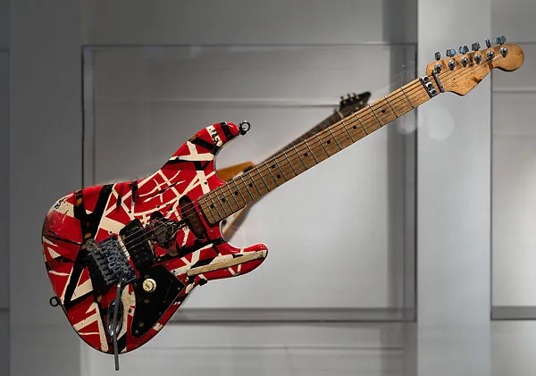

Hobbies
Eddie Van Halen had many interests outside of music. Some of his hobbies included:
- Building his own custom guitars which led to his own guitar collection
- Motorcycle racing
- Playing the Piano
- Painting and visual arts
- Creating music in the studio and outdoor activities

Back to Home